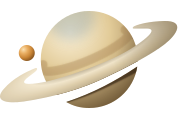

cassini.talk
Browser companion
Checking the app connection…
This tab
Checking this tab…
Checking meeting detection…
Some audio capture files could not be read. See connection details; this check does not determine page readiness.
Start recording asks the Cassini app on this computer to record this tab.
Reloading briefly disconnects you from the call.